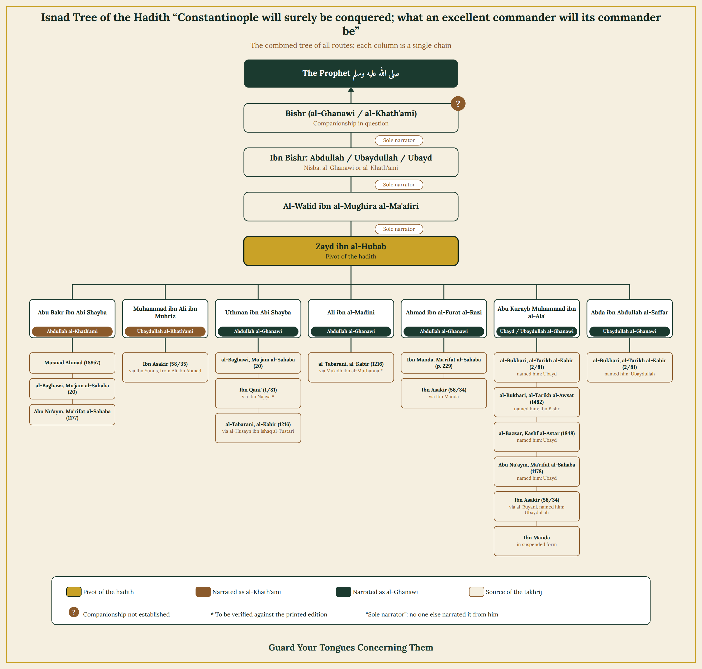

Table of Contents
1. Sources of the Report
This hadith is not found in Sahih al-Bukhari via the transmission of Abu Dharr al-Harawi, nor in Sahih Muslim, nor in Imam Malik's Muwatta (neither via al-Qa'nabi's transmission nor any other). A reference to its narrators is found in Imam Bukhari's other works: he mentions the hadith in al-Tarikh al-Kabir (2/81; also 5/49, 443; and no. 1760) and in al-Tarikh al-Awsat (no. 1482), in the biographical entries of the narrators Ubayd ibn Bishr al-Ghanawi and his father, without including it in al-Du'afa al-Saghir.
After examining Imam Malik's Muwatta, Sahih Muslim, and the other major hadith collections, the hadith was found recorded in the following sources:
- The Musnad of Imam Ahmad ibn Hanbal, no. (18957).
- Mu'jam al-Sahabah by al-Baghawi, no. (20).
- Ma'rifat al-Sahabah by Abu Nu'aym al-Isbahani, nos. (1177) and (1178).
- Mu'jam al-Sahabah by Ibn Qani' (1/81).
- Al-Mu'jam al-Kabir by al-Tabarani, no. (1216).
- Ma'rifat al-Sahabah by Ibn Mandah (p. 229).
- Al-Mustadrak 'ala al-Sahihayn by al-Hakim al-Naysaburi, no. (8300).
- Tarikh Dimashq by Ibn 'Asakir (58/34-36), transmitting from the routes above.
The hadith was not found in Sunan Abi Dawud, Jami' al-Tirmidhi, Sunan al-Nasa'i, Sunan Ibn Majah, or Sunan al-Darimi, as far as this research could determine, nor was it found in the compilations of Ibn Abi Shaybah or Abd al-Razzaq al-San'ani.
Since it was not established that this hadith is narrated in Sahih al-Bukhari via Abu Dharr al-Harawi's transmission, the rule this site otherwise applies to forgo re-studying an already-established chain does not apply here, and a full, detailed isnad study remains necessary.
2. Isnad Tree
Every route of this hadith converges on a single narrator, Zayd ibn al-Khitab al-'Ukli (d. 203 AH), from whom six of his students transmitted independently from his teacher al-Walid ibn al-Mughirah al-Ma'afiri, splitting into the six routes recorded.

The convergence point: Zayd ibn al-Khitab al-'Ukli — with al-Walid ibn al-Mughirah al-Ma'afiri narrating alone from the intermediate narrator (Ibn Bishr), and this latter in turn narrating alone from his father, the claimed Companion Bishr.
3. Study of the Narrators
What follows is a study of every tier of this chain, presenting the criticism (jarh) before the endorsement (ta'deel) for any narrator subject to dispute.
Bishr al-Ghanawi (the claimed Companion)
Criticism (Jarh): It is not sufficient to establish companionship merely by Ibn Hibban's classification of him within the generation of the Companions, or by the narrator's own claim about himself. Ibn al-Salah established — as transmitted from him by al-Nawawi, Ibn Jama'ah, Ibn Kathir, and Hafiz Zayn al-Din al-'Iraqi — that a person's status as a Companion is established by one of four means: mass transmission (tawatur), widespread fame short of mass transmission, the narration of individual Companions that he was one, or his own statement about himself after his integrity has been independently established. Bishr al-Ghanawi's companionship was not established by any of the first three means, nor was any independent integrity established for him that would justify accepting his own statement about himself; his claim to companionship thus remains unestablished by any evidence independent of this hadith itself.
Endorsement (Ta'deel): Abu Hatim al-Razi said: "An Egyptian, had companionship [with the Prophet]." Ibn Hibban mentioned him in al-Thiqat within the generation of the Companions, saying: "He heard the Prophet ﷺ at the conquest of Constantinople." Ibn Hajar transmits in al-Isabah from Abu 'Ali ibn al-Sakan that he said: "He is counted among the people of Syria."
Conclusion: These statements are descriptive and do not rise to the level of independent endorsement establishing companionship — and this is precisely the circularity to be alert to in such cases: using the hadith itself as evidence for its narrator's companionship, then using his companionship as evidence for the hadith's authenticity.
'Ubayd / 'Ubaydullah / Abdullah ibn Bishr (the son, the intermediate narrator)
Criticism (Jarh): Ali ibn al-Madini declared him unknown, saying of this route: "Its narrator is unknown" (transmitted from him by Ibn 'Asakir in Tarikh Dimashq, 58/36, and by al-Dhahabi in Tarikh al-Islam without any comment contradicting it). No one is found to narrate from him except al-Walid ibn al-Mughirah al-Ma'afiri, and there is clear disagreement over his name and lineage among those narrating from Zayd ibn al-Khitab: he is called "Abdullah," "'Ubaydullah," and "'Ubayd" without any patronymic, and is attributed variously to "al-Khath'ami" and to "al-Ghanawi."
Endorsement (Ta'deel): Ibn Hibban mentioned him in al-Thiqat within the generation of the Successors. Abu Hatim al-Razi said: "Among the peers of Abdullah ibn Lahi'ah" — a descriptive statement that does not amount to an endorsement.
Conclusion: Ibn Hibban's endorsement alone is not sufficient to establish an acceptable rank, given his known leniency in authenticating narrators, especially with no other narrator besides al-Walid ibn al-Mughirah to corroborate him; the narrator is thus of unknown status (majhul al-hal). The contemporary researcher Salah al-Din al-Idlibi concluded that whoever named him "al-Khath'ami" (Abu Bakr ibn Abi Shaybah) erred, confusing him with a different narrator of a similar name — "Abdullah ibn Bishr al-Khath'ami al-Katib," the Kufan, among the narrators of al-Thawri and Shu'bah — since neither Bukhari, Abu Hatim, nor Ibn Hibban mention this scribe as having narrated from his father, confirming he is an entirely different person.
Al-Walid ibn al-Mughirah ibn Sulayman al-Ma'afiri, Abu al-Abbas, the Egyptian
Criticism (Jarh): No criticism of him from the early scholars was found. The problem in this chain is not in him, but in his narrating alone from someone of unknown status.
Endorsement (Ta'deel): Salah al-Din al-Idlibi described him as "an Egyptian, truthful (sadooq)," and he has an entry in Bukhari's al-Tarikh al-Kabir, in Ibn Abi Hatim's al-Jarh wa-l-Ta'dil, and in Ibn Hibban's al-Thiqat without criticism. He died in 172 AH.
Conclusion: He is acceptable in his own narration; the problem lies specifically in his narrating alone from someone of unknown status.
Zayd ibn al-Khitab ibn al-Rayyan, Abu al-Husayn al-'Ukli, the Kufan (the convergence point of the hadith)
Criticism (Jarh): Ahmad ibn Hanbal said, as transmitted by his son Abdullah: "Zayd ibn al-Khitab was truthful (sadooq)... but he made many errors" (Su'alat Abi Dawud li-Ahmad, no. 432; al-'Ilal, narration of Abdullah, no. 77). Yahya ibn Ma'in said, as transmitted by Ibn 'Adi: "He would reverse [the chains of] al-Thawri's hadith."
Endorsement (Ta'deel): Al-'Ijli authenticated him, saying: "A trustworthy Kufan." Ibn 'Adi defended him, saying: "Zayd ibn al-Khitab has many narrations, and he is among the established teachers of Kufa whose truthfulness is not in doubt," clarifying that the leniency noted by Ibn Ma'in concerned specifically his narration from al-Thawri.
Conclusion: Zayd ibn al-Khitab is trustworthy on the whole; the leniency noted about him concerns specifically his narration from Sufyan al-Thawri, and this does not affect his narration here from al-Walid ibn al-Mughirah, since it is not via al-Thawri's route. There is nothing in this chain that requires impugning Zayd ibn al-Khitab himself; the weakness lies in the narrators above him.
The Six Students of Zayd ibn al-Khitab (transmitters of the six routes)
Criticism (Jarh): No criticism affecting this matter was recorded against any of them.
Endorsement (Ta'deel): All of them are well-known, trustworthy, precise memorizers whose acceptance is not seriously disputed: Abdullah ibn Muhammad ibn Abi Shaybah (d. 235 AH), Uthman ibn Abi Shaybah (d. 239 AH), Abu Mas'ud Ahmad ibn al-Furat al-Razi (d. 258 AH), 'Abdah ibn Abdullah al-Saffar al-Khuza'i, Abu Kurayb Muhammad ibn al-'Ala' (d. 248 AH), and Muhammad ibn Ali ibn Muhriz.
Conclusion: There is disagreement among them over the precise name of al-Walid ibn al-Mughirah's teacher (their teacher's teacher), not over the basic fact of their narration from Zayd ibn al-Khitab. None of the narrators in this chain is accused of Shi'ism or any other innovation.
4. Study of Connectivity and Hidden Defects
The wording of transmission between Zayd ibn al-Khitab and his teacher al-Walid ibn al-Mughirah, and between al-Walid and his teacher Ibn Bishr, is explicit in stating direct hearing ("he narrated to me"), and neither of them is known to be described with tadlees, so the connectivity of these two tiers is established. As for the narration between Ibn Bishr and his father, it uses "'an" ("on the authority of") rather than an explicit statement of hearing, and no explicit statement of hearing between them was found; however, Ibn Bishr is likewise not known to be described with tadlees, so the use of "'an" here carries no tadlees-related suspicion. The real problem in this chain remains the identity of the father and son and the unknown status of both, not the wording of transmission between them.
As for the claim that the father (Bishr) heard directly from the Prophet ﷺ, its wording is explicit ("that he heard the Prophet ﷺ say"), but this is built on his companionship being established in the first place, and it has already been shown that his companionship is not established by independent evidence.
The most significant hidden defects (ilal) surrounding this chain:
- Instability in the name and lineage of the intermediate narrator: he is called "Abdullah ibn Bishr," "'Ubaydullah ibn Bishr," and "'Ubayd ibn Bishr," and attributed variously to "al-Khath'ami" and to "al-Ghanawi."
- Confusion between this unknown narrator and a different, known narrator with a similar name — a confusion arising from the similarity of names and lineages.
- The unknown status of the intermediate narrator (Ibn Bishr), since only one narrator transmits from him, only Ibn Hibban authenticates him, and Ali ibn al-Madini explicitly declared him unknown.
- The companionship of the father (Bishr) is not established by any evidence independent of this hadith itself.
- Al-Walid ibn al-Mughirah's narrating alone from Ibn Bishr prevents this route from being corroborated by any other independent route at the same tier.
The existence of six separate routes of transmission from Zayd ibn al-Khitab does not remedy this, because all six routes trace back to a single source — al-Walid ibn al-Mughirah, who narrates alone from Ibn Bishr — so these are not independent routes that strengthen one another, but late branchings from a single root containing the unknown status noted above. The concept of "sound due to corroborating routes" (sahih li-ghayrihi) does not apply here, since the basic condition for it is not met: the existence of at least one independently sound chain to which others can be added.
5. Applying the Ten Standards and Criteria
The hadith below is measured against the ten levels adopted in the "Standards & Criteria" section. Some of these standards were originally designed for studying a historical event in which a specific person stands accused, not for directly sourcing a hadith — this is noted beside each standard that does not apply.
Sahih al-Bukhari (the Transmission of Abu Dharr al-Harawi)
Result: The hadith is not found in this transmission at all.
Malik's Muwatta (the Transmission of al-Qa'nabi) / Greater and Lesser History
Result: Not found in Malik's Muwatta, but found in Bukhari's own al-Tarikh al-Kabir and al-Tarikh al-Awsat, which necessitated the full isnad study conducted above.
The Remaining Six Books and the Musnad
Result: Not found in the Six Books; found in the Musnad of Imam Ahmad, via a chain fully studied above.
The Historians
Result: Found in Ibn 'Asakir's Tarikh Dimashq, transmitting from the routes above, without any independent chain adding strength.
The Testimony of Just Contemporaries
Result: If this glad tiding were this magnificent, and related to a major historical event like the conquest of Constantinople, is it conceivable that only a single person would narrate it from the Prophet ﷺ — especially when his companionship itself is disputed or unestablished among some scholars? Is it logical that the Companions never circulated this hadith among themselves, and that it was never invoked by the commanders and soldiers who repeatedly set out to attempt the conquest of Constantinople, hoping to be the ones meant by this glad tiding? Then, when the conquest was finally achieved, would it not be natural for this hadith to become the talk of the age, mentioned repeatedly in scholars' sermons and historians' books and letters? And would it not be expected that it be transmitted from Sultan Mehmed the Conqueror himself, or from his contemporaries, that he saw in his conquest the fulfillment of this glad tiding? Stranger still, early Ottoman sources are not known, as far as this research could determine, to describe Mehmed the Conqueror as "the foretold commander" — even though, had this description been established and current at the time, it would have been among the most prominent things mentioned in his biography and his praises.
The Argument From Scholarly Silence
Result: Not applicable
The Absence of Any Invocation of the Narration by Opponents
Result: Not applicable
Material and Archaeological Evidence
Result: The conquest of the city, in itself, does not count as material evidence for the authenticity of the glad tiding — it is a historical event that could occur just as many other cities were conquered throughout history. The glad tiding can only be used as evidence if the report itself is established and its attribution verified, not merely because the event itself occurred.
Prophetic Exoneration of the Accused
Result: Not applicable — this standard is the very subject of this study, not a result to be measured against it.
Narrations From Known Enemies
Result: Not applicable
6. The Statements of the Imams on This Hadith Itself
Statements of the Early Scholars
Ali ibn al-Madini (d. 234 AH): said of this route: "Its narrator is unknown" (transmitted by Ibn 'Asakir in Tarikh Dimashq, 58/36, and by al-Dhahabi in Tarikh al-Islam, without any comment contradicting it). It is worth noting that Ali ibn al-Madini is himself one of the narrators of this hadith — he transmits it even while ruling one of its narrators to be of unknown status.
Abu Hatim al-Razi (d. 277 AH): said of the son (Ibn Bishr): "Among the peers of Abdullah ibn Lahi'ah," and said of the father, Bishr: "An Egyptian, had companionship [with the Prophet]" — both statements are descriptive and do not rise to the level of independent endorsement.
Muhammad ibn Isma'il al-Bukhari (d. 256 AH): recorded the hadith in al-Tarikh al-Kabir and al-Tarikh al-Awsat without explicitly declaring it authentic or weak — which is the well-known convention of his method in his "Tarikh" works.
Ibn Hibban (d. 354 AH): placed Bishr within the generation of the Companions and his son within the generation of the Successors, within his book al-Thiqat, known for its leniency in authentication, without declaring any explicit ruling on the hadith itself.
Statements of Later and Contemporary Scholars
Al-Hakim al-Naysaburi recorded the hadith in al-Mustadrak, and some secondary sources attribute to him and to al-Dhahabi a ruling of authenticity for it; however, al-Dhahabi himself, in Tarikh al-Islam, records Ali ibn al-Madini's ruling of "unknown" without any comment contradicting it — a discrepancy between two places in his own works that should be noted.
Muhammad Nasir al-Din al-Albani: ruled the hadith weak in al-Silsilah al-Da'ifah (no. 878) and in Da'if al-Jami' al-Saghir (no. 4655), noted the disagreement over the name of "Ibn Bishr al-Ghanawi," and stated that the hadith was not established as authentic in his view, given his lack of confidence in Ibn Hibban's endorsement standing alone.
Shu'ayb al-Arna'ut (in his critical edition of the Musnad): ruled its chain weak due to the unknown status of Abdullah ibn Bishr al-Khath'ami, since al-Walid ibn al-Mughirah al-Ma'afiri narrates from him alone, and no authentication of him is transmitted other than from Ibn Hibban.
Salah al-Din al-Idlibi (a contemporary specialist hadith researcher): after tracing all the routes and distinguishing the confusion between "Ibn Bishr al-Ghanawi" and "Ibn Bishr al-Khath'ami the scribe," and studying the condition for establishing companionship, concluded that this hadith's chain is weak.
Further confirmation: the Dorar Saniyyah hadith encyclopedia records the same sourcing references noted above, and cites al-Albani's ruling of weakness, consistent with the conclusion of this study.
Conclusion and Final Verdict
There is no doubt that Sultan Mehmed the Conqueror is among the great figures of Islamic history — a mujahid sultan through whose hands Allah opened many lands, through whom large numbers of people entered Islam, and whose conquests still leave their mark to this day, as many peoples have preserved their religion because of them.
From this standpoint, we love and honor Sultan Mehmed the Conqueror, and we would be among the happiest of people if the glad tiding attributed to the Prophet ﷺ regarding the conquest of Constantinople were established as authentic. But truth is more deserving of being followed, and it is not permissible for us to attribute a hadith to the Messenger of Allah ﷺ merely because it agrees with what we love or wish for.
Our methodology on this site is clear: we do not accept a hadith unless its authenticity is established in its own right — that is, by a sound, connected chain reaching the Prophet ﷺ — without relying on external corroborations or circumstantial support. The mere occurrence of the event is not sufficient to prove that the Prophet ﷺ said it; rather, the transmission itself must be soundly established, so that we may say with certainty: the Messenger of Allah ﷺ said [this].
Nevertheless, this report not being established according to the methodology adopted here does not diminish Sultan Mehmed the Conqueror's standing, nor his great achievement. We consider him among the finest commanders who served Islam, and the army that conquered Constantinople among the finest of armies. Succeeding in achieving this conquest is a great historical achievement in itself, and every commander who leads his army to a conquest is indeed an excellent commander, and every army that achieves a conquest is indeed an excellent army.
And Allah knows best.